Продолжаем знакомство с новой серией графических ускорителей GeForce RTX. На очереди игровой флагман NVIDIA в лице GeForce RTX 2080 Ti. Это самый мощный видеоадаптер на базе архитектуры Turing, который поднимает планку производительности и поддерживает все новые технологии NVIDIA. В данном обзоре мы изучим возможности GeForce RTX 2080 Ti Founders Edition, проверим разгонный потенциал и сравним игровую производительность с GeForce RTX 2080 и GeForce GTX 1080 Ti.
Поскольку архитектура и технические особенности видеокарт разбирались в отдельном обзоре, кратко напомним основные моменты. В основе GeForce RTX 2080 Ti лежит графический процессор TU102, слегка урезанный по вычислительным блокам. В активе топового видеоадаптера 4352 потоковых вычислительных ядра CUDA, 544 тензорных блока для операций глубокого обучения, 88 блоков RT для ускорения трассировки лучей, 272 текстурных блока и 88 блоков рендеринга. 11 ГБ памяти GDDR6 сообщаются с процессором по 352-битной шине. Эффективная частота памяти эквивалентна значению 14 ГГц. Для GPU заявлена базовая частота 1350 МГц при среднем Boost Clock 1545 МГц или 1635 МГц.
Визуально флагманская видеокарта напоминает GeForce RTX 2080. Обе выполнены в едином дизайне с сочетанием черных и серебристых элементов.
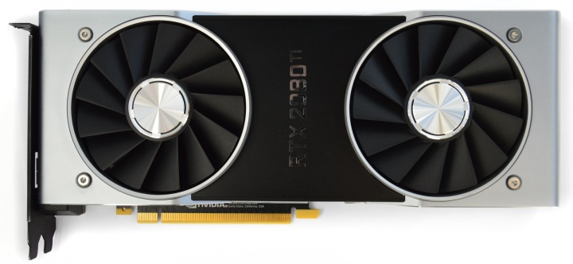GeForce RTX 2080 Ti занимает привычные два слота. Полная длина почти 27 см. GeForce RTX 2080 Ti Founders Edition выглядит несколько проще старых моделей GeForce GTX 10, но в общих очертаниях узнается некая преемственность и знакомый индустриальный стиль в оформлении.
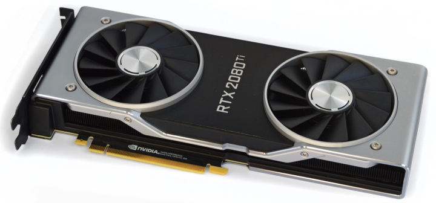Обратная сторона полностью закрыта металлической серебристой пластиной. Она имеет плавные закругленные края, образуя общую конструкцию с корпусом.
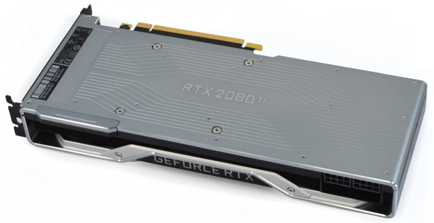Разъем для подключения второй видеокарты в режиме SLI закрыт специальном заглушкой. Обмен данными происходит по скоростному интерфейсу NVLink.
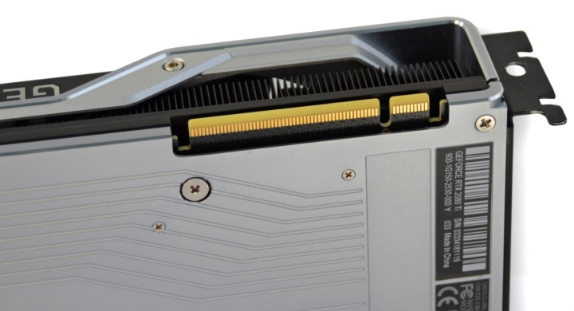В углу есть два восьмиконтаткных разъема для подключения внешнего питания.
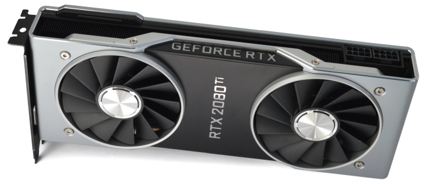Большая надпись GeForce RTX на боковой грани подсвечивается зеленым цветом. Есть возможность управления подсветкой через специализированные утилиты для работы с видеокартами.
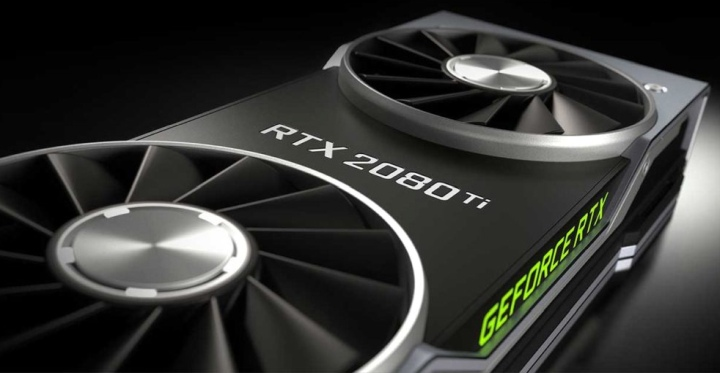Панель с разъемами имеет небольшую перфорацию. Самих разъемов пять: три порта DisplayPort с поддержкой стандарта 1.4a, один HDMI 2.0b и VirtualLink (USB Type-C).
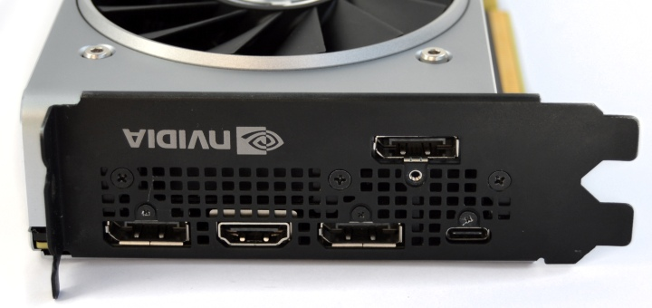Взглянем ближе на систему охлаждения. Нижняя часть кулера выглядит знакомо. Это массивное черное основание, которое контактирует со всеми горячими элементами на плате. В окошке основания есть выпирающая площадка медной испарительной камеры, которая отводит тепло от GPU. Все провода собраны в один шлейф, который идет куда-то внутрь конструкции. Он обеспечивает работу подсветки и вентиляторов.
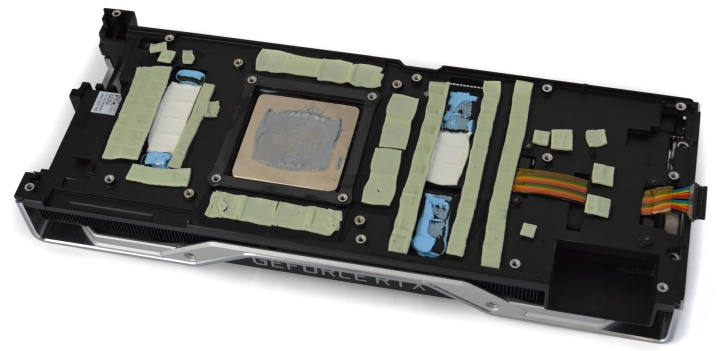Используются разные термоинтерфейсы. В основном задействованы зеленоватые термопрокладки. Они обеспечивают контакт с микросхемами памяти, транзисторами и танталовыми конденсаторами. Для дросселей используется вязкое синее вещество, но для центральных элементов задействована белая термопрокладка.
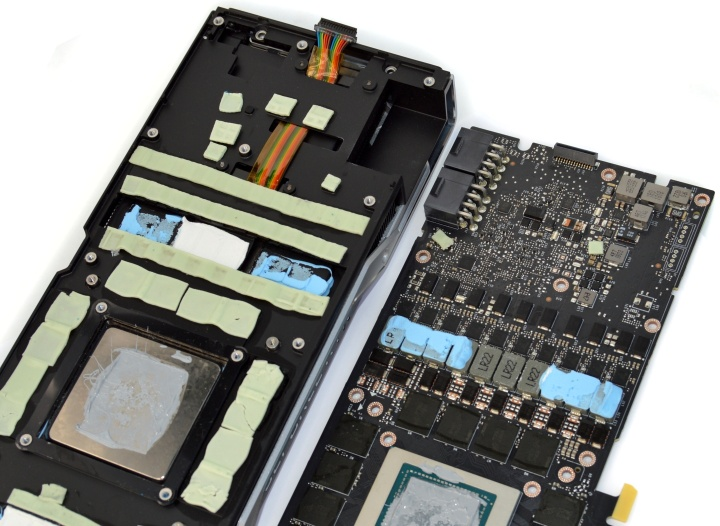Синий термоинтерфейс также просматривается в месте соприкосновения радиатора и основания кулера.
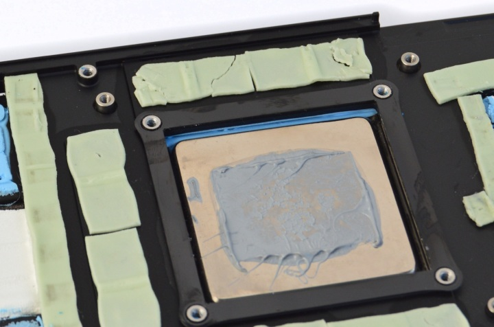Что касается полного разбора охлаждения, то это нетривиальная задача. Структура кулера такова, что ряд винтов спрятан под лицевой черной панелью с названием GeForce RTX 2080 Ti, а сама панель держится на клее. Мы решили ограничиться общим осмотром и официальным изображением радиатора. Видно, что это массивная конструкция. Тепловые трубки заменяет испарительная камера.
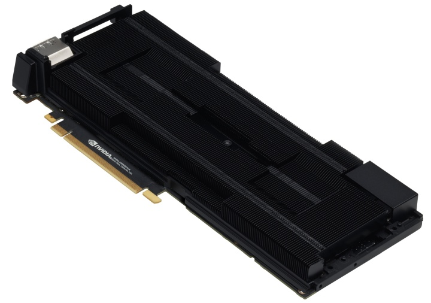Задняя пластина тоже участвует в охлаждении. На внутренней поверхности есть несколько термопрокладок, которые обеспечивают контакт с платой в зоне под микросхемами памяти и узлом питания. Остальная поверхность покрыта диэлектрической черной пленкой. Примечательно, что одна маленькая термопрокладка (на снимке крайняя справа) наложена прямо на эту пленку, и прямого контакт с металлической поверхностью явно не обеспечивает.
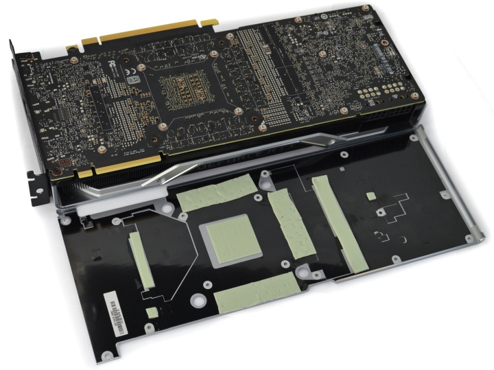Печатная плата имеет сложный дизайн, обе поверхности испещрены элементами. Всего насчитывается 13 фаз питания.
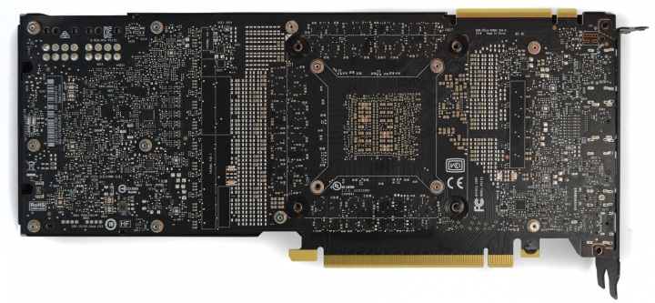 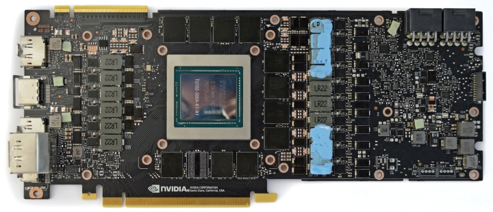Полная маркировка процессора TU102-300A-A1-K1. Это массивный кристалл площадью 754 кв. мм.
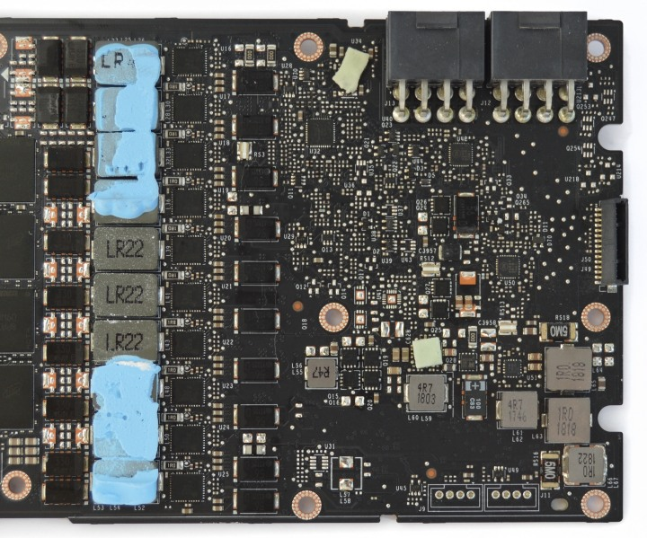Полная маркировка процессора TU102-300A-A1-K1. Это массивный кристалл площадью 754 кв. мм.
11 ГБ памяти набрано микросхемами Micron с маркировкой 8PA77 D9WCW.
Базовая частота ядра 1350 МГц при Boost Clock 1635 МГц. Эффективная частота памяти GDDR6 соответствует 14000 МГц